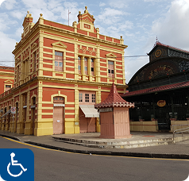

Principais Destinos Acessíveis!
Clique em cima das imagens para descobrir locais para visitar nas cidades.

Manaus (AM)
Maior cidade da Amazónia, destacada por sua arquitetura histórica, rica gastronomia e a beleza natural da Floresta Amazônica.

Bélem (PA)
Um importante centro histórico, cultural e econômico, reconhecida por sua riqueza natural e culinária típica.

Palmas (TO)
Capital mais jovem do Brasil, Palmas atrai visitantes pelo lago da Usina Hidrelétrica de Lajeado, praias fluviais e belas paisagens do Jalapão.

Teatro Amazonas

Bosque da Ciência

Praia da Ponta Negra

Mercado Municipal
Teatro Amazonas
Bosque da Ciência
Praia da Ponta Negra
Mercado Municipal